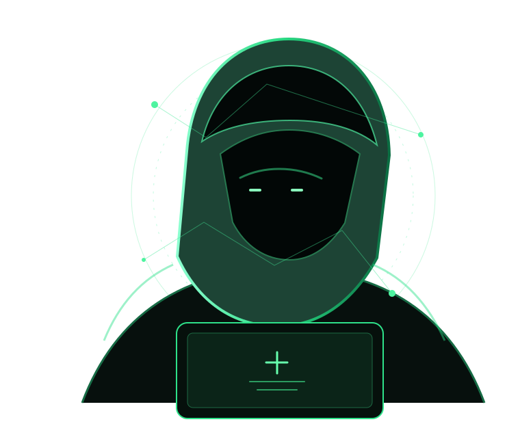
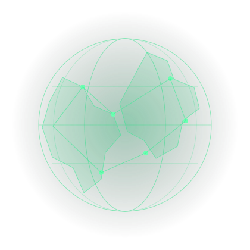

COMMUNAUTÉ & ÉVÉNEMENTS
OSINT Collectif — Session Live
Rencontres, analyses et cas pratiques en direct avec la communauté.
Voir la communauté →Ressources vérifiées, outils, méthodes, guides et parcours pour apprendre, pratiquer et mener des investigations en sources ouvertes.

Le kit complet pour collecter, analyser et exploiter les informations en sources ouvertes.

Outils, documentations, formations, laboratoires et communautés classés par spécialité.
Essaie un autre terme ou modifie les filtres.
Les ressources marquées « À vérifier » sont en attente de validation par un mainteneur.
Des fondamentaux à la recherche avancée : navigue par spécialité et construis ton parcours.
Des chemins d'apprentissage progressifs pour transformer les ressources en pratique concrète.
Découvrir les parcours ↗Accède à des ressources officielles au Bénin, en Afrique, en Europe, aux États-Unis et dans les organisations internationales.
Rencontres, analyses et cas pratiques en direct avec la communauté.
Voir la communauté →Progresse avec une communauté qui partage ses connaissances et construit des ressources utiles.
Rejoindre HashCode ↗La bibliothèque grandit grâce aux contributions vérifiées de la communauté.